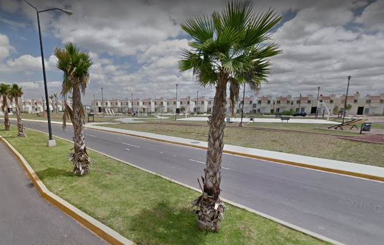
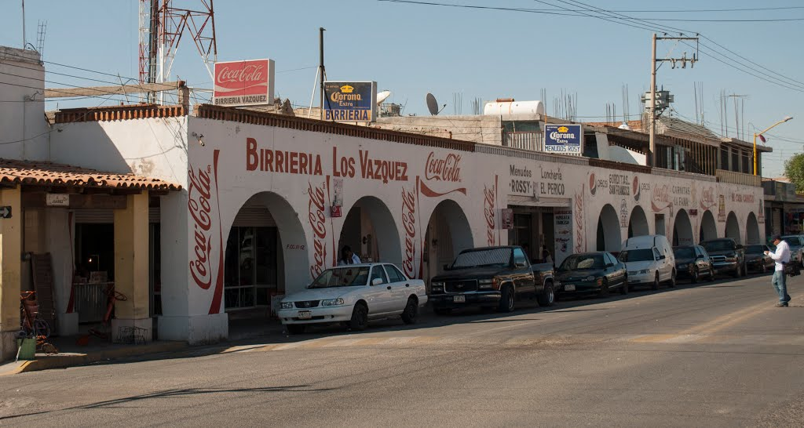

Mis lugares favoritos
Parque de URBI
Me gusta ir al parque porque ahí te relajas y puedes hacer ejercicio.
Carnitas de San Pancho
Esta avenida está buena porque ahí venden todo tipo de comida y puedes comer lo que quieras.
Feria de San Marcos
Lo que me gusta de Aguascalientes es su feria, aunque ahora no es posible ir.
Chichén Itzá
Creo que este es lugar que más me llama la atención de todo México.
Cataratas del Niágara
De todo el continente americano me gustaría visitar este lugar primero.
Pirámides de Egipto
Este es el lugar que más me gustaría visitar en todo el mundo.